AI로 영상을 만드는 두 가지 길
요즘 AI로 영상을 만드는 길은 크게 둘이에요. 첫 번째는 영상 생성 모델이에요. 화면 왼쪽의 'PROMPT' 칸에 '노을 진 언덕 위로 천천히 지는 해'라고 넣으면, 가운데 AI를 거쳐 오른쪽처럼 픽셀로 된 영상 한 편이 바로 나와요.
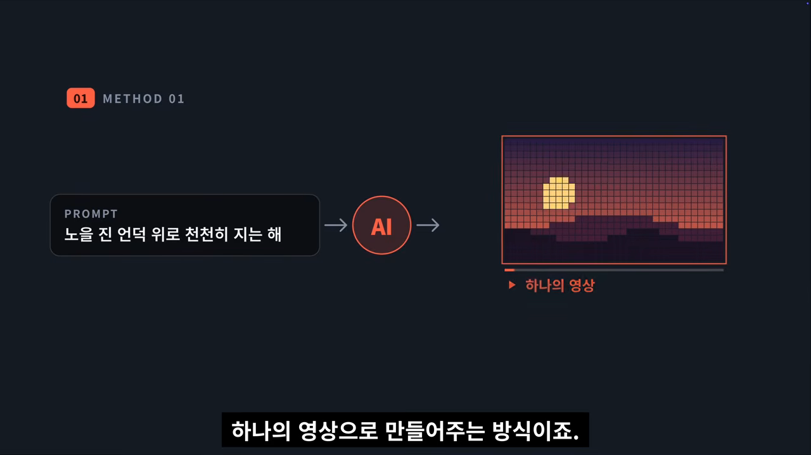
두 번째가 이 영상의 주제예요. 코드로 움직이는 화면을 만들고, 그 화면을 영상처럼 쓰는 방식이에요. 낯설게 들리지만 평소 보는 웹사이트에 이미 있어요. 아래 여행 사이트 예시 오른쪽에 적힌 세 가지, 글자가 서서히 나타나고, 이미지가 움직이고, 스크롤하면 화면이 바뀌는 것 모두 코드로 만든 움직임이에요.
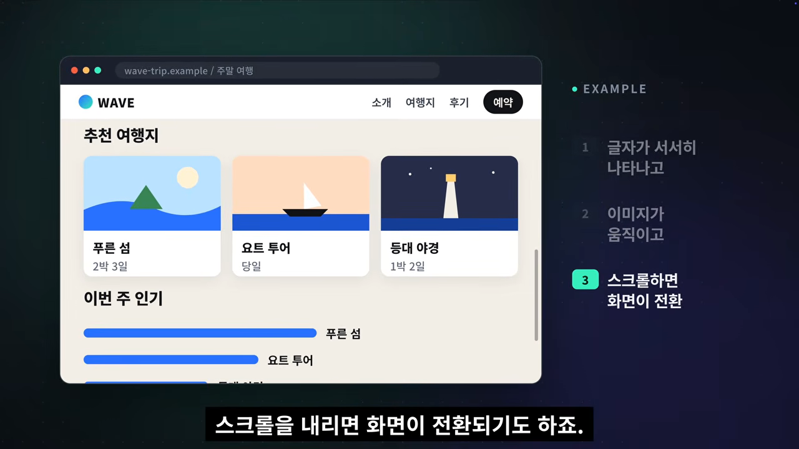
여기서 더 나가면 수많은 입자가 화면을 날아다니고, 3D 물체가 돌고, 카메라가 공간 안으로 들어가는 장면도 만들 수 있어요. 브라우저 안에서 영상처럼 움직이는 화면을 만들 수 있다는 거예요. 필요하면 그 화면을 녹화해서 MP4 파일로 쓰면 돼요.
영상 전체에서 발표자가 두 방식을 견준 내용을 한 표로 모으면 이래요.
| 비교 | 영상 생성 모델 | 코드로 만든 영상 |
|---|---|---|
| 만드는 법 | 프롬프트를 넣으면 모델이 장면과 움직임을 생성 | AI가 웹 화면 코드를 짜고, 그 화면을 영상으로 변환 |
| 고칠 때 | 바뀐 요구를 반영한 새 영상을 통째로 다시 생성 | 해당 부분의 코드만 고침 |
| 글자 | 망가질 때가 있음 | 실수가 거의 없음 |
| 확대 | 화소로 이루어져 크게 띄우면 흐려짐 | 많은 경우 수치로 그려서 깨지지 않음 |
웹에서 움직임을 만드는 도구들
웹에서 움직임을 만드는 기본은 HTML(HyperText Markup Language), CSS, 자바스크립트예요. CSS만으로도 꽤 많은 걸 해요. 아래 화면 왼쪽 style.css를 보면 @keyframes play에 0도에서 360도까지 회전을 적어 두었어요. 오른쪽 'RESULT' 창의 카드가 그대로 돌고, 아래 opacity, translate, scale, rotate 버튼이 CSS로 할 수 있는 움직임 종류예요.
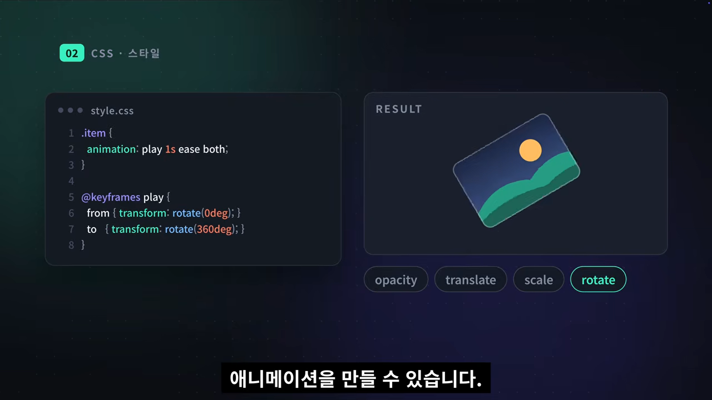
처음부터 다 짤 필요는 없어요. 움직임과 그래픽을 전문으로 다루는 도구가 따로 있거든요. 발표자는 다섯 가지를 차례로 소개해요. 슬라이드 아래 작은 글씨가 각각의 쓰임이에요. GSAP는 애니메이션, SVG는 벡터 그래픽, Canvas는 픽셀 그리기, Three.js는 3D 공간, WebGL·WebGPU는 GPU(Graphics Processing Unit) 효과예요.
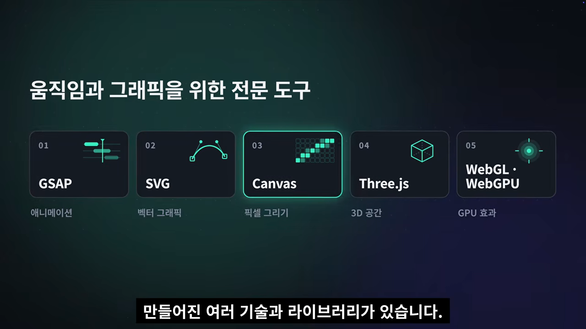
GSAP — 영상 편집 타임라인처럼
GSAP는 여러 움직임의 순서와 타이밍을 세밀하게 맞추는 데 특화돼 있어요. 아래 화면이 그 개념을 그대로 보여 줘요. V1 글자의 '나타나기', V2 도형의 '확대'와 '덮기', V3 '넘어가기'가 시간 축 위에 블록으로 놓여 있죠. 영상 편집 프로그램의 트랙과 똑같은 모양이에요.
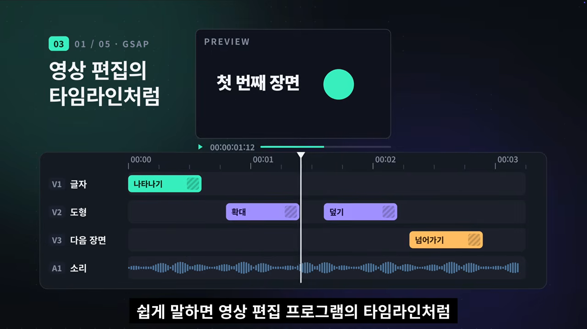
SVG와 Canvas — 벡터로 그리기, 픽셀로 뿌리기
SVG는 선, 도형, 아이콘 같은 벡터 그래픽을 직접 만들고 움직여요. 아래 화면 가운데 별은 아래 버튼의 원, 별, 하트, 말풍선 사이를 오가며 모양이 자연스럽게 바뀌어요. 뒤편 건물 윤곽선도 선으로 그린 SVG예요.
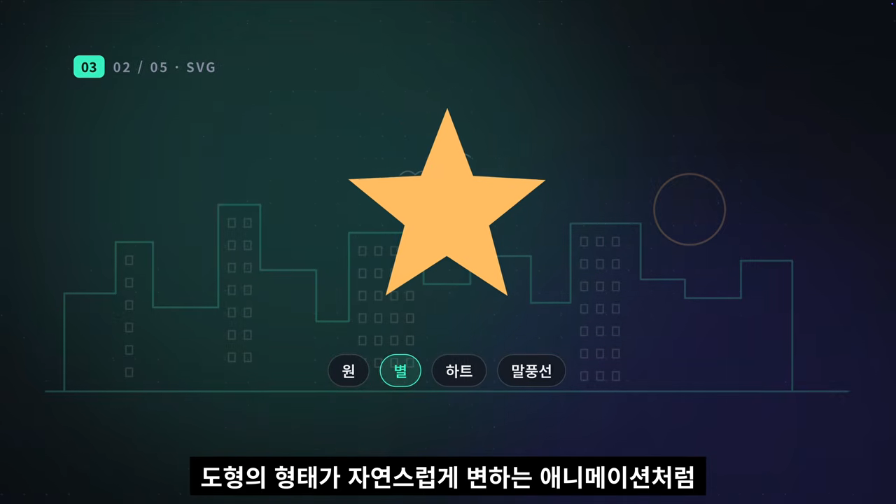
Canvas는 더 자유로워요. 아래처럼 색색의 점 수백 개를 화면에 뿌리고, 흩어지고 튕기고 서로 반응하게 만들 수 있어요. 왼쪽 '흩어지고'라는 글자가 지금 장면의 움직임을 가리켜요.
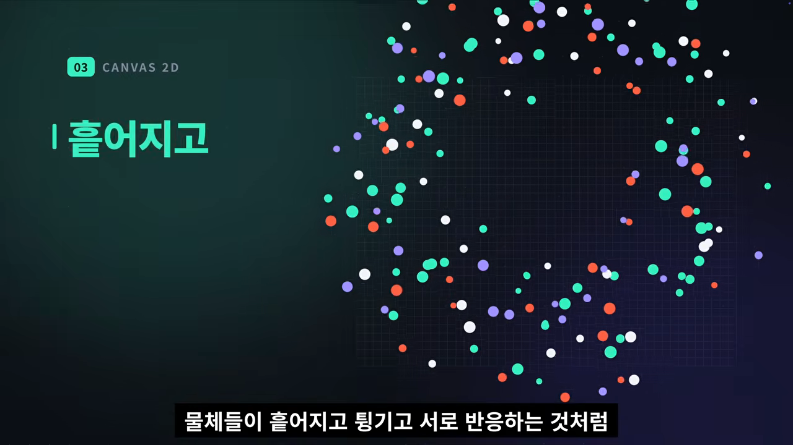
Three.js와 WebGL·WebGPU — 3D 공간과 특수 효과
Three.js를 쓰면 브라우저 안에 3D 공간을 만들어요. 물체를 놓고 조명을 비추고 카메라를 움직여요. 아래 장면 왼쪽 위의 'REC' 표시와 오른쪽 아래 '35mm · f 2.0'은 실제 카메라처럼 연출했다는 뜻이고, 아래 라벨이 '카메라가 공간 안을 이동'이에요.
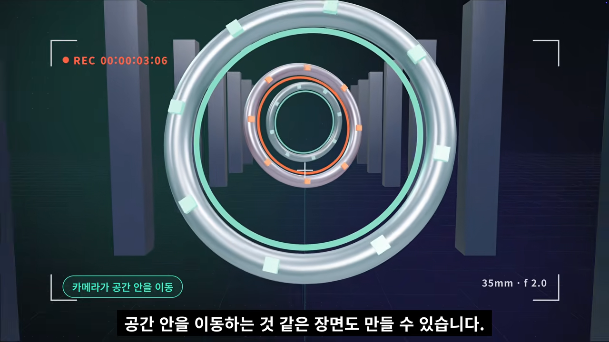
더 복잡한 시각 효과는 WebGL이나 WebGPU로 만들어요. 화면 아래 칩 다섯 개가 그 예시예요. 빛, 왜곡, 물결, 셰이더, 대량의 파티클이고, 지금은 맨 끝 '대량의 파티클'이 켜져 있어요.
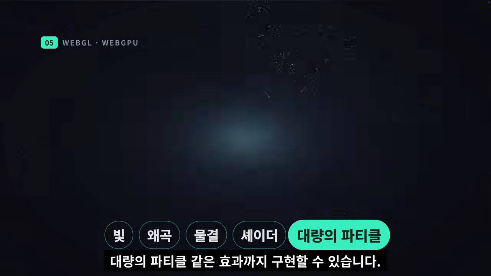
클로드 코드로 직접 만들어 보기
클로드에 영상 만들기 기능이 새로 생긴 건 아니에요. 영상도 결국 코드라서, 클로드가 원래 잘하던 코딩으로 만드는 거예요. 그래서 방법은 단순해요. 클로드를 켜고 원하는 영상을 설명하면 돼요.
발표자가 실제로 보낸 프롬프트가 아래 화면이에요. 맨 위에 Claude Code v2.1.289, Opus 5.5 with xhigh effort가 보여요. 프롬프트 첫 줄이 주제예요. 「웹은 역동적인 모션그래픽을 표현하기에 가장 적합한 환경이다」를 약 10초짜리 모션 그래픽으로 만들어 달라고 했어요. 그 아래 줄들에 HTML·CSS·JavaScript를 기본으로 Canvas, SVG, WebGL, Three.js를 써도 된다는 것, 타이포그래피를 중요한 시각 요소로 쓰라는 것, 폰트는 'SIL Open Font License 1.1'이 붙은 것만 쓰라는 것, 최종 결과물은 브라우저에서 바로 실행되는 웹페이지로 만들라는 것이 적혀 있어요.
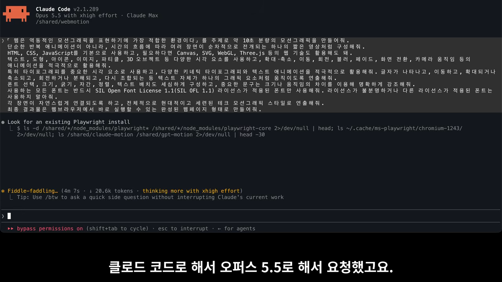
결과는 1920×1080, 60 fps, 10초짜리 웹페이지였어요. 큰 글자가 움직이며 주제 문장을 보여 주는, 타이포그래피 중심 영상이에요. 발표자는 쓰인 글꼴이 궁금해서 응답을 확인해요. 아래 화면 오른쪽 응답 카드의 '사용한 글꼴' 항목에 '직접 만든 서체 · SIL OFL 1.1'이라고 적혀 있어요.
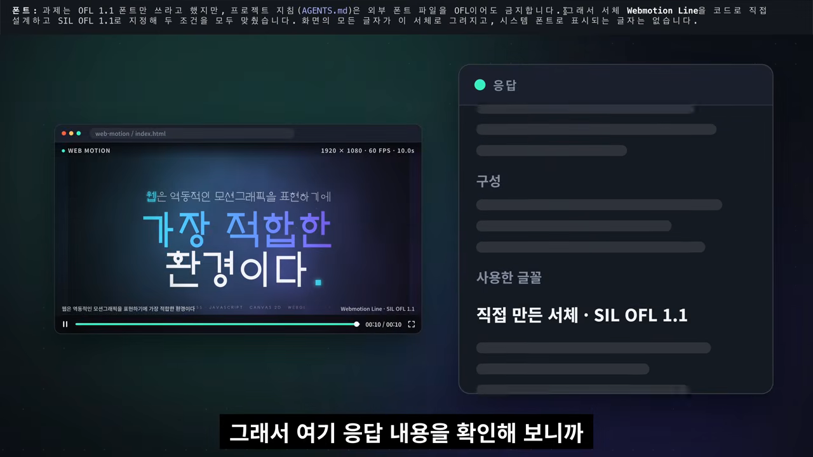
왜 이렇게 됐을까요. 발표자의 에이전트 지침에는 '외부 자료를 가져와 쓰지 말라'는 규칙이 있었어요. 아래 화면 오른쪽 AGENTS.md 카드에서 '외부 자료 사용 금지'가 강조된 줄이에요. 왼쪽은 클로드가 만든 '글' 자를 'ASCENT', 'MIDDLE', 'BASELINE' 기준선 위에 그린 모습이에요.
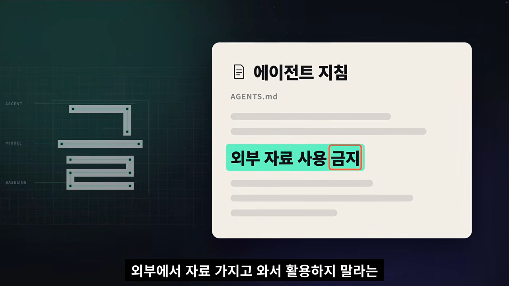
그래서 아래처럼 두 규칙이 맞서게 됐어요. 왼쪽 'RULE 01'은 'OFL 폰트만', 오른쪽 'RULE 02'는 '외부 자료 금지'예요. OFL(Open Font License) 폰트를 쓰려면 밖에서 가져와야 하는데, 가져오는 건 금지라서 가운데 칸이 비어 있어요. 클로드는 이 칸을 직접 만든 폰트로 채웠어요. 글꼴을 그리고 OFL 1.1 라이선스를 붙여서 두 조건을 다 지킨 거예요.
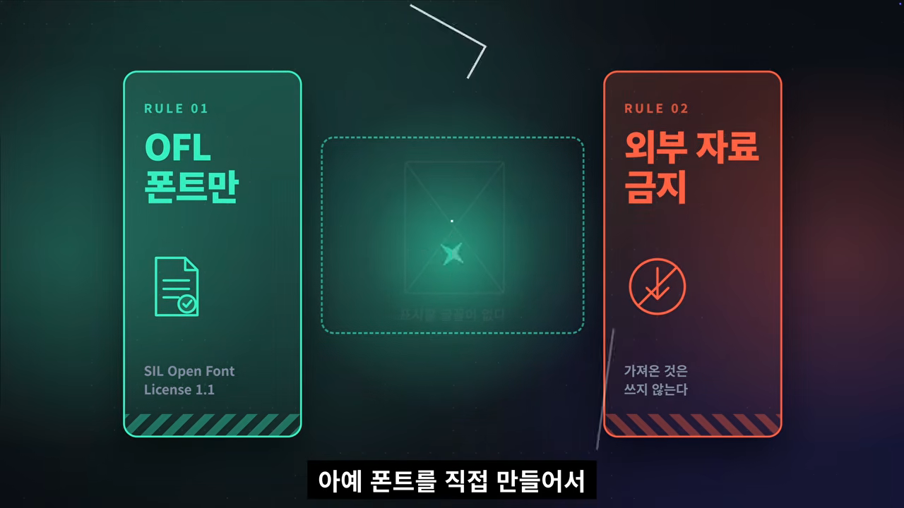
고치고, MP4로 뽑기
영상을 만들다 보면 고치고 싶은 데가 생기기 마련이에요. 생성 모델로 만든 영상이라면 '고친다'는 개념이 없어요. 아래 화면처럼 v1의 노을 영상을 두고 요구를 바꾸면, 완전히 다른 v2가 '다시 생성'돼요.
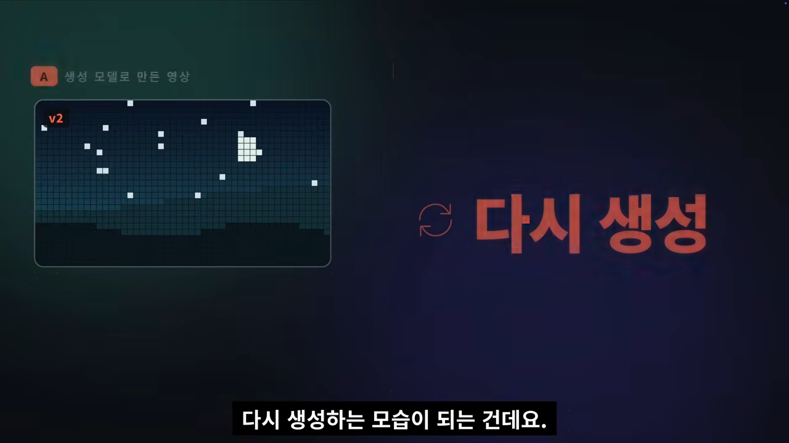
코드로 만든 영상은 해당 부분의 코드만 바꾸면 돼요. 발표자는 화면 위아래에 붙은 문구를 지워 달라고 요청해요. 아래 화면에서 빨간 점선 상자가 지울 부분이에요. 위쪽 'WEB MOTION' 정보 줄과 아래쪽 설명 줄이죠.
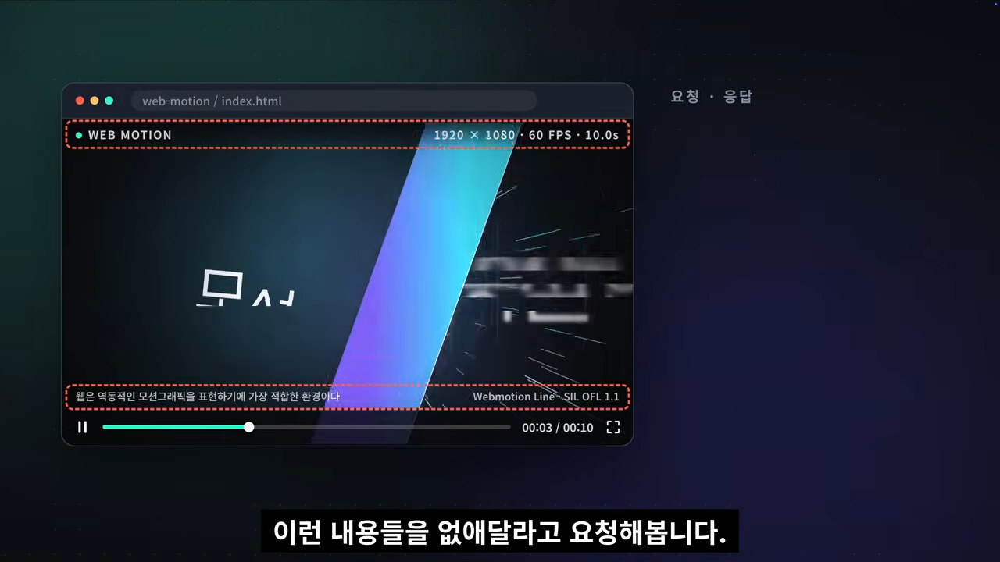
재생 막대도 문제예요. 웹페이지에선 편하지만 영상에 찍히면 안 되죠. 이것도 함께 없애 달라고 했어요. 아래 화면 오른쪽 '요청 · 응답' 목록에 네 줄이 쌓였어요. '상단·하단 문구 없애줘'에 '지웠어요', '재생 바도 함께 없애줘'에 '지웠어요'가 붙고, 위에 '수정 완료' 표시가 떴어요.
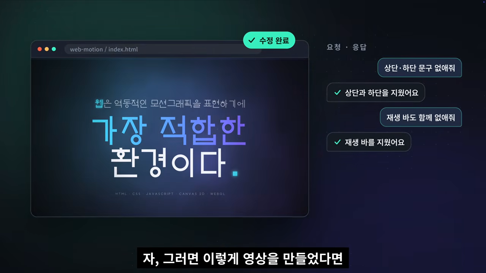
다 만들었으면 MP4로 바꿔야 실제로 쓸 수 있어요. 이것도 그냥 부탁하면 돼요. 발표자는 4K 해상도에 초당 60장, 즉 60 fps로 변환해 달라고 했어요. 아래 화면 오른쪽 목록 끝에 'mp4로 변환해줘', '4K, 60fps로 부탁해', 'video_4k60.mp4 완성'이 이어져요. 왼쪽 큰 글씨가 3840 × 2160, 60 fps예요.
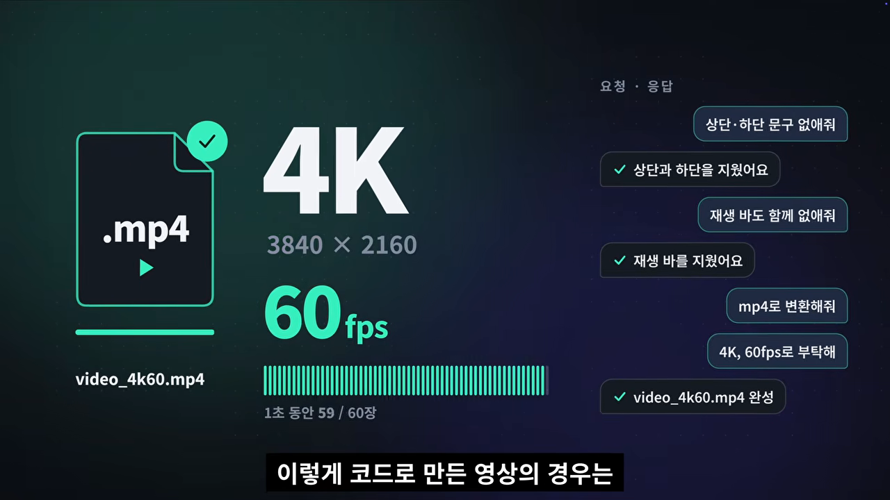
여기까지의 흐름을 정리하면 이래요. 사람이 하는 일은 말로 요청하고 눈으로 확인하는 것뿐이에요.
flowchart LR A["주제·조건을 담은 프롬프트"] --> B["클로드가 웹페이지 코드 작성"] B --> C["브라우저에서 결과 확인"] C -->|"고칠 곳 요청"| B C --> D["MP4 변환 요청 (4K, 60fps)"] D --> E["video_4k60.mp4"]
왜 크게 키워도 안 깨질까요
코드로 만든 영상의 또 다른 특징은 해상도예요. MP4 같은 영상은 작은 화소로 이루어져요. 4K는 가로 3,840개, 세로 2,160개라서, 아래 화면처럼 곱하면 8,294,400, 한 장면에 약 830만 개의 화소예요.
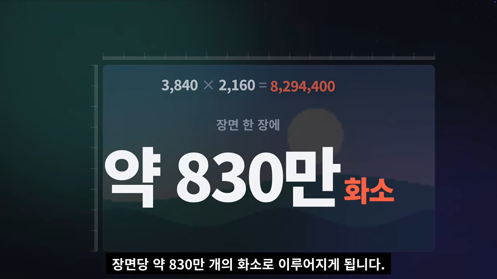
그래서 아주 큰 스크린에 띄우면 선이 흐려질 수밖에 없어요. 아래 화면 왼쪽 'PX' 칸이 화소로 그린 원을 40배 확대한 모습이에요. 경계가 뿌옇게 번져요. 오른쪽 'VEC' 칸은 점·선·면으로 그린 원을 똑같이 확대한 건데, 경계가 날카로운 선 그대로예요. 웹으로 만든 화면은 구현 방식에 따라 다르지만 많은 경우 이렇게 수치로 그려요.
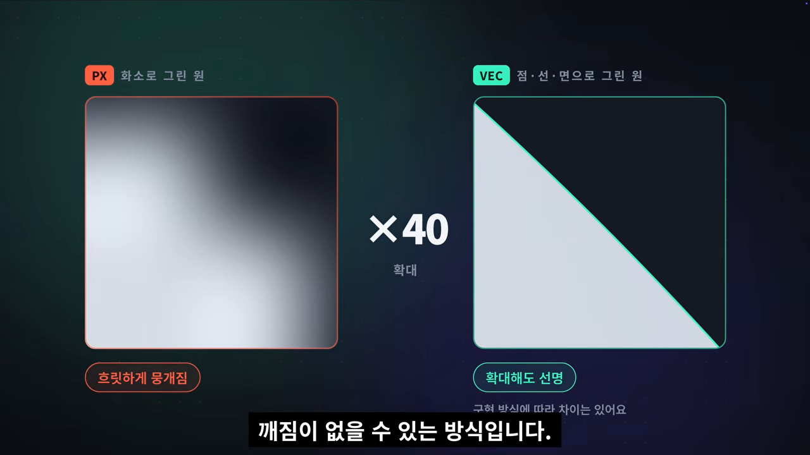
이 방식이 좋은 세 가지 이유
이번 예시는 '웹은 역동적인 모션 그래픽을 표현하기에 가장 적합한 환경이다'라는 한 줄 주제만 줬어요. 기획이 더 구체적이면 그걸 주면 되고, 대본이 있으면 대본을 줘서 영상으로 만들어 달라고 해도 좋아요. 아래 화면이 그 그림이에요. 왼쪽 'IN' 칸의 대본 다섯 줄이 오른쪽 'OUT' 칸에서 장면 다섯 개로 하나씩 이어져요.
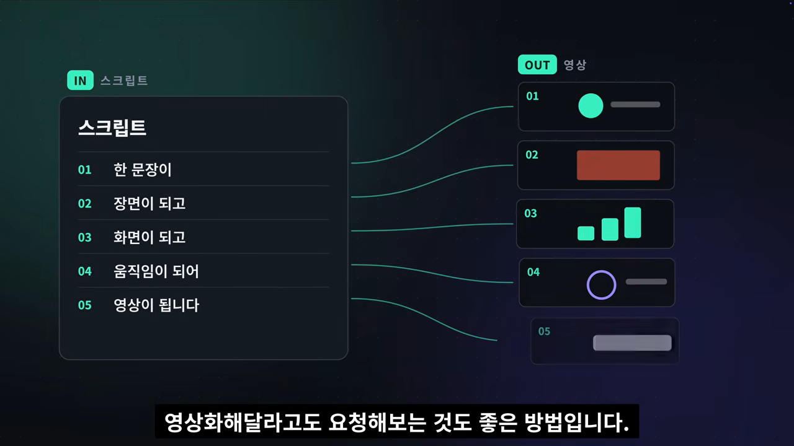
발표자는 이 방식의 장점을 세 가지로 묶어요. 화면 위쪽 탭의 '정확한 글자', '쉬운 제작', '스스로 개선'이에요.
정확한 글자
AI로 이미지나 영상을 만들어 본 사람은 글자가 망가지는 걸 자주 봐요. 코드로 만들면 글자는 코드에 적힌 그대로 나와서 실수가 거의 없어요. 발표자는 AI 답변에 오타가 섞일 확률 정도라고 봐요. 아래 화면 왼쪽이 AI 응답 예시, 오른쪽 계기판이 '오타 확률 ≈ 아주 낮음'이에요. 아래 초록 라벨이 그 비유, '영상 속 글자 실수 ≈ AI 응답 속 오타'예요.
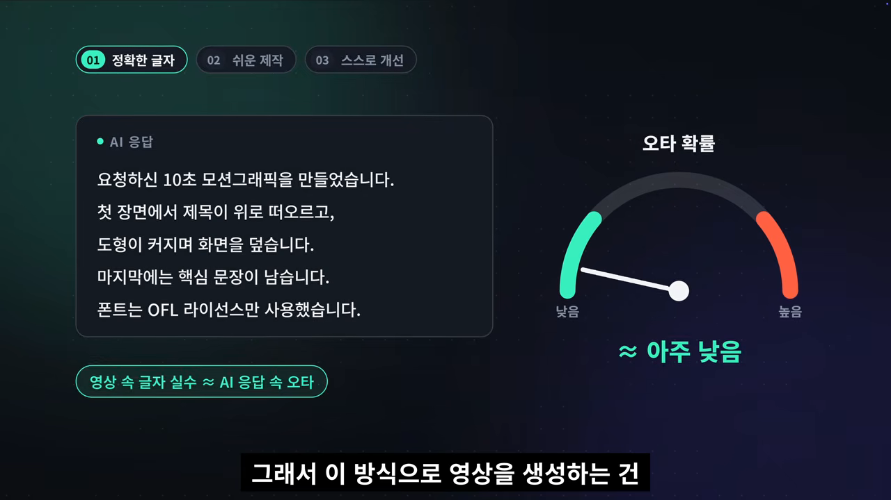
쉬운 제작 — 눈으로 보면 끝
만드는 과정은 앱이나 웹사이트를 바이브 코딩할 때와 똑같아요. 아래 화면에서 '가계부 앱 만들어줘', '카페 홈페이지 만들어줘'처럼 말로 시키는 방식이 영상에도 그대로 이어져요. 영상도 코드로 이루어져 있으니까요.
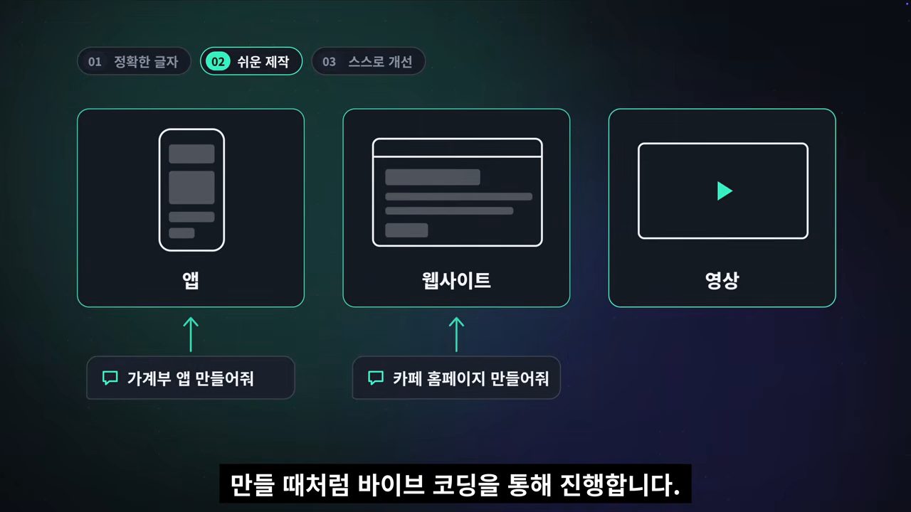
그런데 영상에는 큰 편리함이 하나 더 있어요. 바이브 코딩으로 만든 앱은 겉으로 멀쩡해 보여도 속에 문제가 숨어 있을 수 있어요. 데이터 처리가 틀렸거나, 보안 구멍이 있거나, 특정 상황에서만 오류가 날 수 있죠. 아래 가계부 앱 화면은 '정상 작동' 배지가 붙어 있고 금액도 맞아 보여요. 하지만 개발 지식이 없으면 속까지 괜찮은지 판단하기 어려워요.
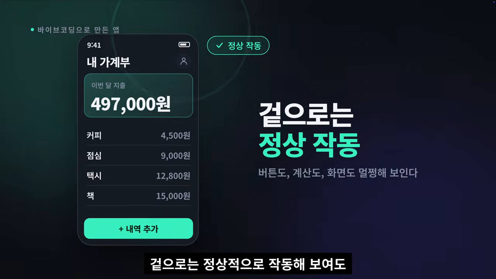
영상은 사정이 달라요. 만들려는 결과물이 눈에 보이는 화면과 움직임 그 자체라서, 보기에 문제가 없으면 문제가 없는 거예요. 아래 화면 오른쪽 '눈으로 바로 보이는 문제' 목록이 그 예시예요. 움직임이 어색하다, 글자가 너무 작다, 장면이 너무 빠르다·구성이 어긋났다. 셋 다 코드를 전혀 몰라도 보면 알아요.
스스로 개선
이번 영상은 한 번에 꽤 잘 나왔지만, 보통은 첫 시도에 마음에 드는 결과가 나오기 어려워요. 발표자는 AI에게 참조 이미지를 보고 SVG로 따라 그리게 한 예시를 보여 줘요. 아래 화면 왼쪽이 참조 이미지인 영사기, 오른쪽이 1차 시도예요. 동그라미 두 개와 선 몇 조각뿐이에요.
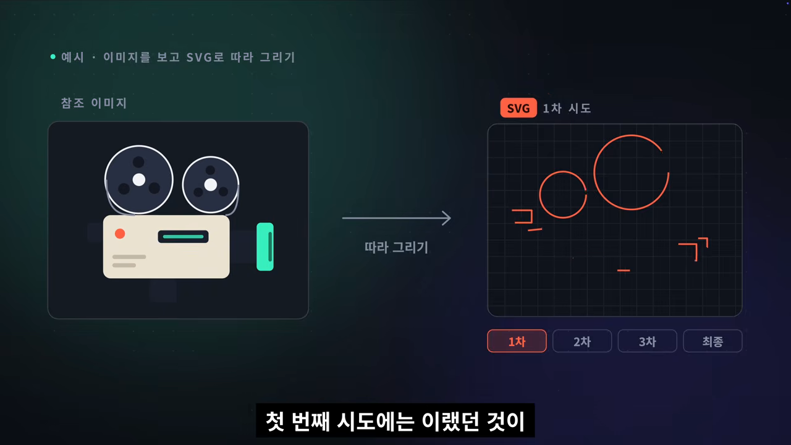
AI가 결과물을 직접 보고 고치게 하면 달라져요. 아래 두 장이 2차와 최종이에요. 2차는 '확인 후 수정' 표시와 함께 몸통과 렌즈가 생겼고, 최종은 참조 이미지와 거의 같아졌어요.
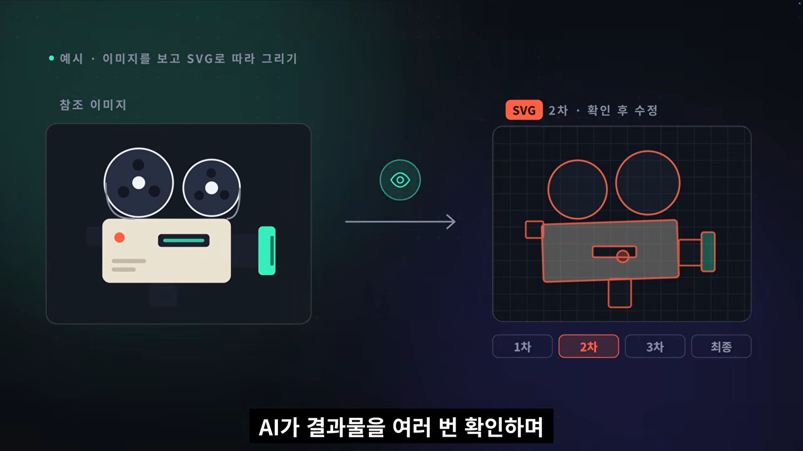
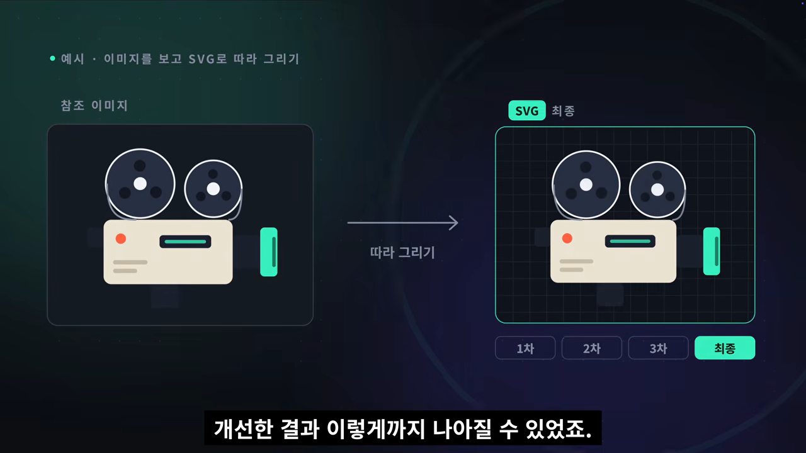
영상도 마찬가지예요. AI가 자기 결과물을 계속 되돌아보게 하면 품질을 끌어올릴 수 있어요.
발표자는 추상적이고 개념적인 내용을 많이 다뤄서 자료 화면이 자주 필요하다고 해요. 정지 이미지보다 이렇게 움직이는 화면이 전달력이 좋아서 요즘 이 방식을 많이 쓴대요. 같은 생각을 하는 크리에이터가 늘면 우리가 보는 영상 콘텐츠의 품질도 전반적으로 올라갈 거라고 내다봐요.
결론적으로 콘텐츠 만들기 더 편해졌습니다.
— 영상 08:52